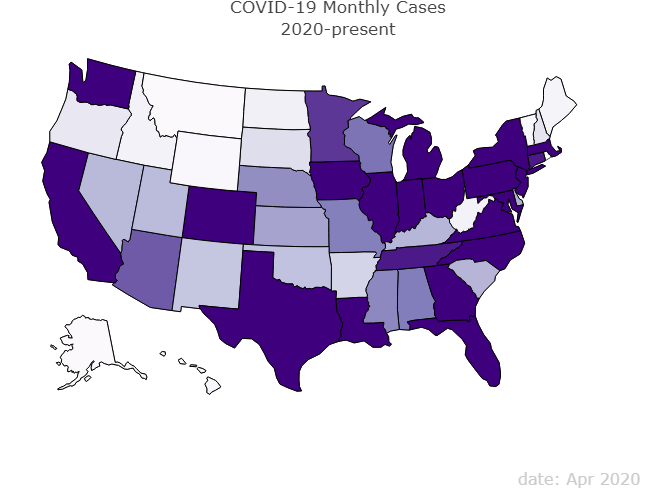
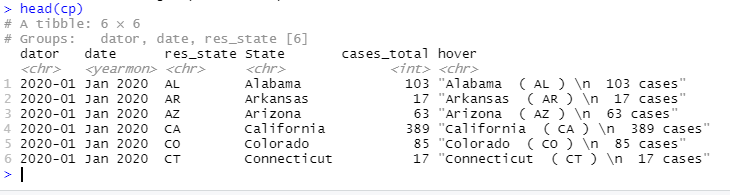
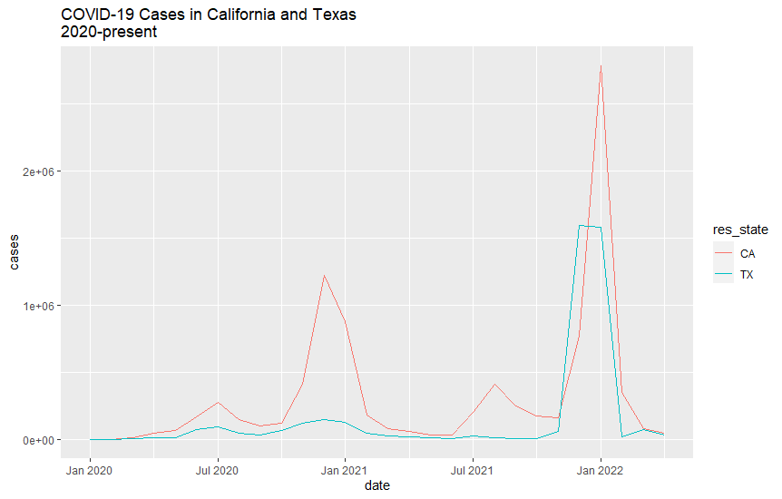
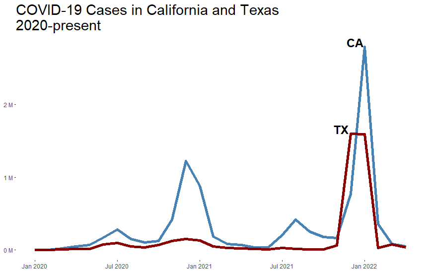
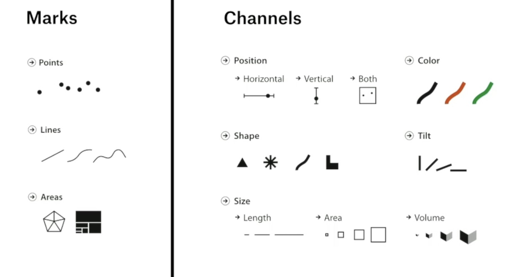
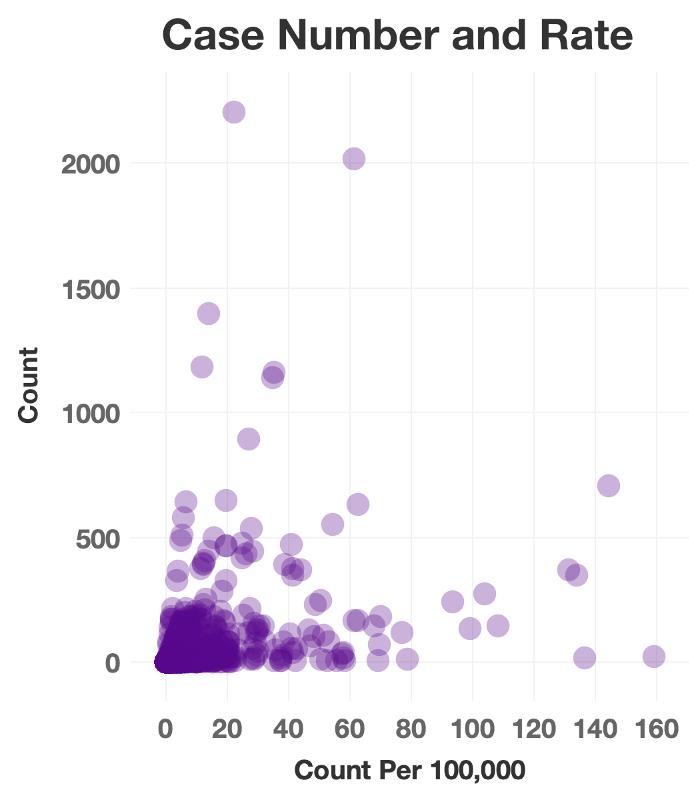
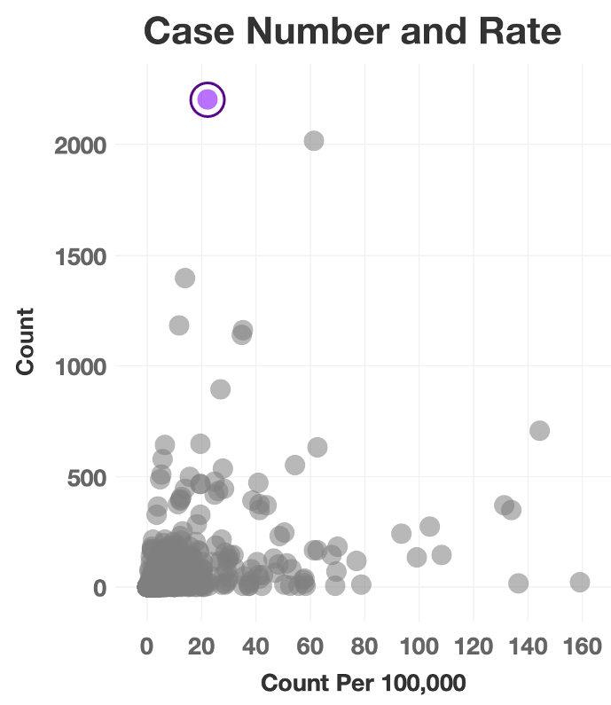
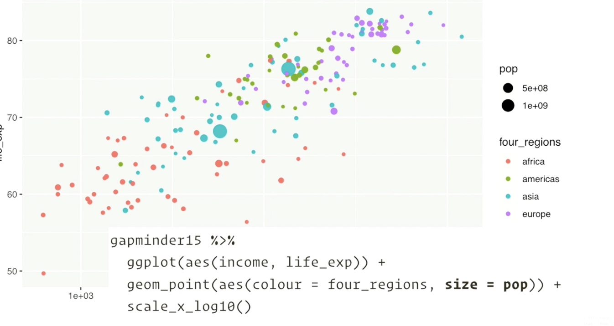

Data Visualization for All:
The Art and Science of Communicating with Data
Peace Ossom Williamson
Associate Director, NNLM National Center for Data Services
@123POW | nnlm-ncds@nyulangone.org
Access sildes at https://pow123.github.io/WiDS_2022
Uvalde
Viz Defined
Visualization is aggregating and manipulating data for visual display.
Impact of Data Visualization
- exploration versus explanation
- visualization as art
- visualization as emotion
New to Data?

Open Educational Resource / Open Textbook:
The Data Notebook
The who, what, where, why. Don't forget the which.
- Who is the viz for?
- What is the message you are communicating?
- Where will that viz be presented?
- Which features are important?
EDA: Data Visualization Informing Modeling

Visualization Design
Visualization Design: Map Example
Data source: COVID-19 Case Surveillance Public Use Data
Example 1: COVID-19 Map
cp <- states %>%
group_by(dator, date, res_state, State) %>%
summarize(cases_total= sum(cases)) %>%
mutate(hover=paste(State, " (", res_state, ") \n ", cases_total, "cases"))
fontStyle = list(
size = 15,
color = "black"
)
label = list(
bgcolor = "#EEEEEE",
bordercolor = "transparent",
font = fontStyle
)
casegraph <- plot_geo(cp,
locationmode = "USA-states") %>%
add_trace(locations= ~res_state,
z = ~cases_total,
zmin = 0,
zmax = 10000,
frame = ~dator,
color= ~cases_total,
colors = "Purples",
text = ~hover,
hoverinfo = "text") %>%
layout(geo = list(scope = "usa"),
title = "COVID-19 Monthly Cases\n2020-present") %>%
style(hoverlabel = label) %>%
config(diplayModeBar = FALSE)
casegraph
Result
Live Map: https://rpubs.com/pow123/covmap
Example 2: Line Chart
original version
Example 2: Line Chart
updated version
Original Line Chart Code
caseline <- ggplot(scp, aes(date, cases)) +
geom_line(aes(color = res_state)) +
labs(title = "COVID-19 Cases in California and Texas\n2020-present")
caselineUpdated Line Chart Code
aseline <- ggplot(scp, aes(date, cases)) +
geom_line(aes(color = res_state),size=2) +
scale_color_manual(values = c("steelblue", "darkred")) +
geom_dl(aes(label = res_state), method = list(dl.trans(x = x - 0.5),
"top.bumpup", cex = 1.5,fontface='bold')) +
scale_y_continuous(labels = label_number(suffix = " M", scale = 1e-6)) +
labs(title = "COVID-19 Cases in California and Texas\n2020-present")
caseline + theme(legend.position="none", plot.title = element_text(size=22), panel.grid.major = element_blank(), panel.grid.minor = element_blank(),
panel.background = element_blank(), axis.title.x = element_blank(), axis.title.y = element_blank())Consider Design Elements
| Before | After |
|  |  |
Polishing requires more work.
Accessibility
- Text supports.
- Use more than hue.
- Reproducibility.
Don't Forget Reproducibility
Thank you!
More info: The Data Notebook Chapter, "Tell"